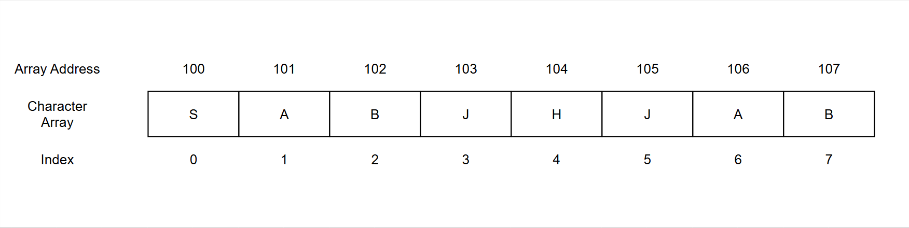
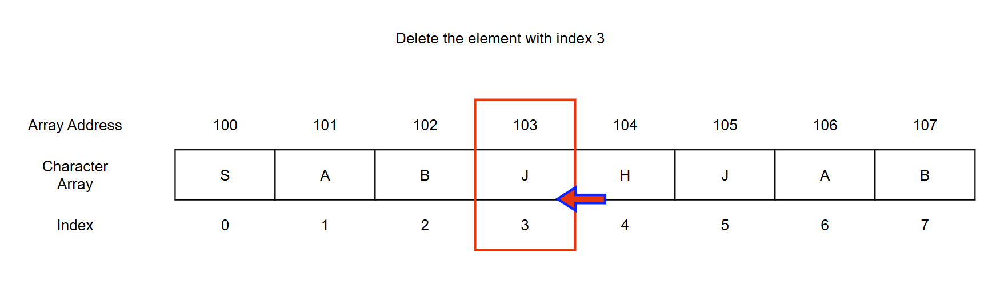
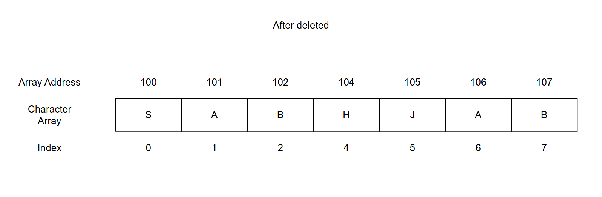
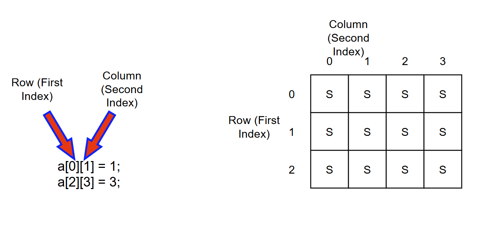
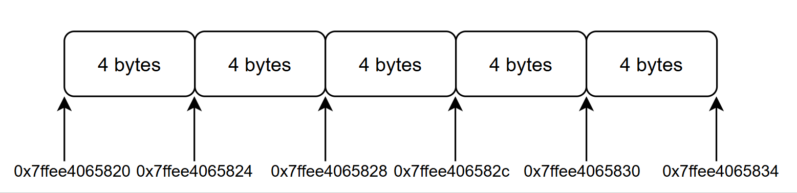

Fundamentals of Array Theory
Release date: 2025-04-12
Arrays are one of the fundamental data structures. In coding interviews, problems involving arrays typically are not conceptually difficult but are designed to assess a candidate's ability to manage and implement code precisely.
In other words, while the idea might seem simple, the implementation often requires careful attention to detail.
To truly understand array-related problems, it is essential to first grasp how arrays are stored in memory.
An array is a collection of elements of the same type stored in contiguous memory locations.
Accessing elements in an array is straightforward using their index.
Let's take an example of a character array, illustrated as follows:
There are two key points to remember:
Array indices start from 0.
Array memory addresses are contiguous.
Because array elements are stored in contiguous memory locations, operations like inserting or deleting elements require shifting other elements accordingly.
For instance, when deleting the element at index 3, all subsequent elements must be shifted to fill the gap, as shown below:
 If you're using C++, keep in mind the difference between vector and array. The underlying structure of vector is based on arrays, but strictly speaking, vector is a container, not a raw array.
In a native array, elements cannot be removed directly; they can only be overwritten.
For a two-dimensional array, refer to the figure below:
Are the memory addresses of a two-dimensional array contiguous?
In C++, they are. Different programming languages handle memory layouts differently, but in C++, a 2D array is stored in contiguous memory.
Let's conduct an experiment. Here is a sample C++ code:
#include <iostream>
using namespace std;
void test_arr() {
int array[2][3] = {
{0, 1, 2},
{3, 4, 5}
};
cout << &array[0][0] << " " << &array[0][1] << " " << &array[0][2] << endl;
cout << &array[1][0] << " " << &array[1][1] << " " << &array[1][2] << endl;
}
int main() {
test_arr();
}
Sample Output:
0x7ffee4065820 0x7ffee4065824 0x7ffee4065828
0x7ffee406582c 0x7ffee4065830 0x7ffee4065834
Notice that the addresses are in hexadecimal, and we can observe that the addresses are continuous.
Some readers might not be familiar with memory addresses. Let me briefly explain: the difference between 0x7ffee4065820 and 0x7ffee4065824 is 4 bytes, which makes sense because int occupies 4 bytes. Similarly, in hexadecimal arithmetic, 8 + 4 = c (where c stands for 12 in decimal).
Illustrated below:
Thus, it is clear that in C++, a two-dimensional array occupies a contiguous block of memory.